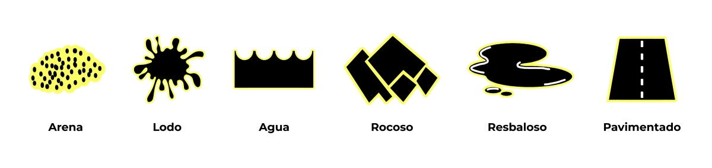
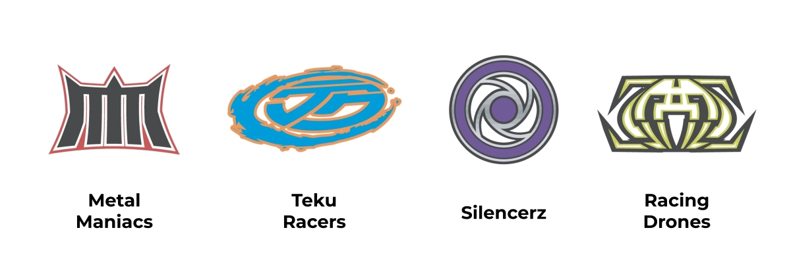
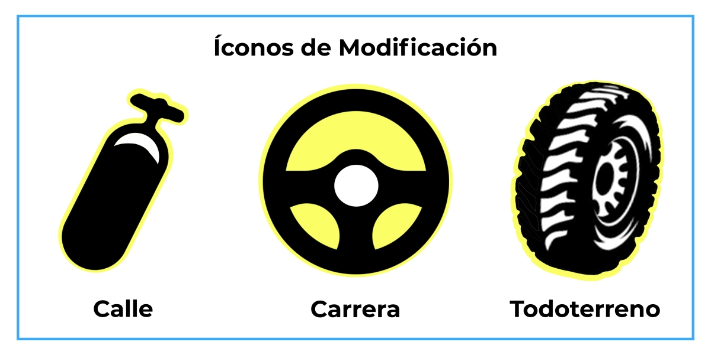

Hot Wheels Acceleracers es una franquicia diseñada y lanzada en el año 2005 por Mattel© con diversos productos: desde la serie animada que contas de cuatro capítulos y su contenido complementario y los autos a escala que aparecen a lo largo de la misma, como así también HyperPods y pistas de carreras, indumentaria, merchandising de todo tipo y entre ellos el juego de cartas que venimos a presentar en esta sección.
Reglas del Juego
Introducción al Juego
¡Bienvenido a los Reinos de Carreras! Los Reinos de Carreras fueron creados por los misteriosos Accelerons para poner a prueba a los mejores corredores de todo el mundo. ¿Crees que tú tienes lo que se necesita para correr aquí, en las pistas más asombrosas y peligrosas que puedas imaginar? ¡Entonces toma una carta, ponla en marcha y descúbrelo!
Objetivo del Juego
Sé el primer jugador en mover tres Vehículos a través de cuatro reinos de carreras.
Dinámica del Juego
Todo lo que tú hagas en el juego gira en torno a: Velocidad, Poder y Desempeño o SPP (Speed, Power
and Perfomance como abreviatura del inglés). Todas las cartas en el juego tienen 3
ventanas que exhiben sus puntuaciones de SPP leyéndose de izquierda a derecha.
Tú comienzas cada turno con 3 Puntos de Acción que puedes utilizar
para equipar las cartas de Vehículos con
otras cartas que aumenten las puntuaciones de los SPP de los Vehículos y hacerlos lo
suficientemente poderosos para avanzar al siguiente reino de carreras.
Tipos de Cartas: Reinos de Carreras
Los jugadores deben correr a través de cuatro reinos de carreras separados
para ganar el juego. Una simple carrera siempre consiste de cuatro reinos.
A continuación, enumeramos las características que presentan las cartas de los Reinos:
- Tipo de Carta: Reino de Carreras
- Descripción de la carta: Cualquier poder especial que tenga un reino aparecerá como letra negrita. Nota: Siempre asegúrese de leer las letras en negrita de las cartas.
- Valor de Escape: El valor de escape de un reino es la puntuación de la Velocidad, Poder, o Desempeño (Speed, Power or Perfomance) y debe de coincidir con la de sus Vehículos. Debe igualar o exceder el valor para poder salir del reino.
- Nombre del Reino: El nombre de cada reino es seguido por el símbolo Acceleron que lo representa. Este símbolo no tiene efecto en el juego.
- Íconos de Terreno: Los íconos de terreno otorgan una bonificación de +1 a los SPP de cualquier Vehículo en un reino con un ícono de terreno que coincida. (Algunas cartas de Vehículos tienen íconos de terreno). Un Vehículo solamente puede recibir una bonificación de +1 por reino. 
Tipos de Cartas: Vehículos
Personaliza tus Vehículos con otras cartas que se suman a sus valores de
Velocidad, Poder y Desempeño.
A continuación, enumeramos las características que presentan las cartas de los Vehículos:
- Tipo de Carta: Vehículo
- Logo del Equipo: El logo del equipo identifica el equipo del Vehículo. 
- Íconos de Capacidad: Los íconos de capacidad le indican qué Tarjetas de Modificación puede adjuntar a un Vehículo: solo las modificaciones con un ícono coincidente se pueden equipar con ese Vehículo.
- Clasificación SPP: La base de la clasificación de los SPP de los Vehículos pueden ser incrementados para equipar otras cartas al Vehículo.
- Descripción de la Carta: Cualquier habilidad especial será listada en letra negrita.
- Nombre del Vehículo: Hay dos versiones de cada Vehículo: básico y avanzado. Las versiones avanzadas son más poderosas que las básicas, y ellas añaden Torqued, Hyper, Vectra o V.2 al nombre básico (ejemplo: Torqued Hollowback)
- Íconos de Terreno: Si un ícono de terreno del Vehículo coincide con el ícono de terreno del reino en el que está, el Vehículo recibe una bonificación de +1 al valor de los SPP (ejemplo: el SPP del Hollowback es 3, 3, 2, aumentaría a 4, 4, 3).
Tipos de Cartas: Modificaciones
Las cartas de Modificación son modificaciones físicas permanentes de un Vehículo. Se quedan con tu Vehículo mientras se mueve
de un reino a otro.
A continuación, enumeramos las características que presentan las cartas de las Modificaciones:
- Tipo de Carta: Modificación
- Costo de Puntos de Acción: Cada carta, excepto las de reinos y Vehículos, tienen costo de Puntos de Acción (Action Point: AP): cuántos Puntos de Acción debes gastar para poner la carta en juego. Los jugadores comienzan con 3 Puntos de Acción cada turno.
- Bonificación SPP: Cuando pagas el costo de Puntos de Acción para jugar una Modificación en un Vehículo, llamado equipamiento, puedes agregar la bonificación SPP de la Modificación al SPP de tu Vehículo. Nota: Una ventana SPP vacía indica un valor de 0.
- Íconos de Capacidad: Las Modificaciones solo pueden equiparse en los Vehículos si al menos un ícono de capacidad coincide entre la Modificación y el Vehículo (algunas cartas tienen más de 1 ícono de Capacidad). 
- Íconos de Terreno: Cualquier ícono de terreno que aparezca en una Modificación se agrega al Vehículo que equipa.
- Nombre de la Modificación: El nombre que corresponde a la carta
- Descripción de la Carta: Cualquier habilidad especial será listada en letra negrita.
Tipo de Cartas: Turnos
Las tarjetas de Turno reflejan la habilidad de un conductor y pueden ser la
diferencia entre el ganador y el perdedor. Proporcionan un impulso temporal a la puntuación SPP de un Vehículo; a diferencia de las
Modificaciones, los Turnos se descartan cuando el Vehículo avanza a un
nuevo reino de carreras (a menos que la tarjeta indique lo contrario).
A continuación, enumeramos las características que presentan las cartas de los Turnos:
- Tipo de Carta: Turno
- Costo de Puntos de Acción: Al igual que con las cartas de Modificaciones, los Turnos tienen un costo de Puntos de Acción que debes pagar para ponerlos en juego.
- Descripción de la Carta: Cualquier habilidad especial será listada en letra negrita
- Nombre del Turno: Nombre de la habilidad específica de la carta.
- Bonificación SPP: Después de equipar un Turno a un Vehículo, añade su bonificación SPP al SPP del Vehículo.
Tipo de Cartas: Accele-Chargers™
Los Accele-Chargers son unos increíbles artefactos dejados por los Accelerons. Pueden equipar a cualquier Vehículo,
pero, como las tarjetas de Turno, son temporales y deben descartarse
cuando el Vehículo que la equipe avance al siguiente Reino.
A continuación, enumeramos las características que presentan las cartas de los Accele-Chargers:
- Tipo de Carta: Accele-Chargers™
- Costo de Puntos de Acción: Los Puntos de Acción que debes gastar para poner esta carta en juego.
- Descripción de la Carta: Las habilidades especiales serán listadas en letra negrita.
- Nombre del Accele-Charger: Un símbolo Acceleron sigue al nombre del Accele-Charger e identifica a qué Reino pertenece. Este símbolo no tiene efecto en el juego.
- Íconos de Terreno: Los íconos de terreno que aparecen en el Accele-Charger son añadidos al Vehículo que lo equipa.
- Bonificación SPP: Después de equipar un Accele-Charger a un Vehículo, añade su boninificación SPP a los SPP del Vehículo.
Nota: Un Vehículo puede tener UN SOLO Accele-Charger equipado a la vez. Todas las cartas de Accele-Chargers tienen una característica especial: NO PUEDEN ser removidas por la mayoría de las Cartas de Peligros.
Tipo de Cartas: Peligros
Los Peligros destruyen (o "desechan") las cartas de Modificación y Turnos,
pero no afectan a los Accele-Chargers (a menos que la carta de Peligro lo indique
explícitamente). ¡Algunos de los Peligros más poderosos pueden destruir Vehículos enteros!
A continuación, enumeramos las características que presentan las cartas de los Peligros:
- Tipo de Carta: Peligro
- Costo de Puntos de Acción: Los Puntos de Acción que debes gastar para poner esta carta en juego.
- Descripción de la Carta: Las habilidades especiales serán listadas en letra negrita.
- Nombe del Peligro: El nombre del "desastre" en cuestión.
- Daño del SPP: Para jugar con un Peligro en las cartas de Turnos o Modificaciones de un oponente, paga el costo de Puntos de Acción, alinea los números del daño de los SPP del Peligro en cuestión con las cartas objetivo de bonificación SPP y resta el daño. Si alguno de los números del SPP objetivo se reduce a 0 o menos, esa carta se desecha inmediatamente (se retira del juego) y usted descarta su Peligro.
Cartas del Juego
Como hemos visto anteriormente, existen varios tipos de cartas que se presentan en el juego, y a su vez existen las cartas avanzadas y/o holográficas dentro del juego. Veamos algunas a continuación:


Como verán, el mismo auto, ¡pero una versión mejorada!. Hasta los SPP
aumentan, lo que mejora las probabilidades de poder avanzar de Reino en Reino para obtener la
victoria.
Luego tenemos tipos de cartas holográficas, como la siguiente:

¡Un carta con un arte y unos detalles holográficos que no puedes dejar
pasar! Estas cartas son igual de jugables que el resto, pero le aportan un detalle artístico a
la batalla.
Para mas información pueden dirigirse al Contenido+ donde
detallamos todas las cartas del juego, contenido audio-visual relacionado y algunos datos
interesantes.